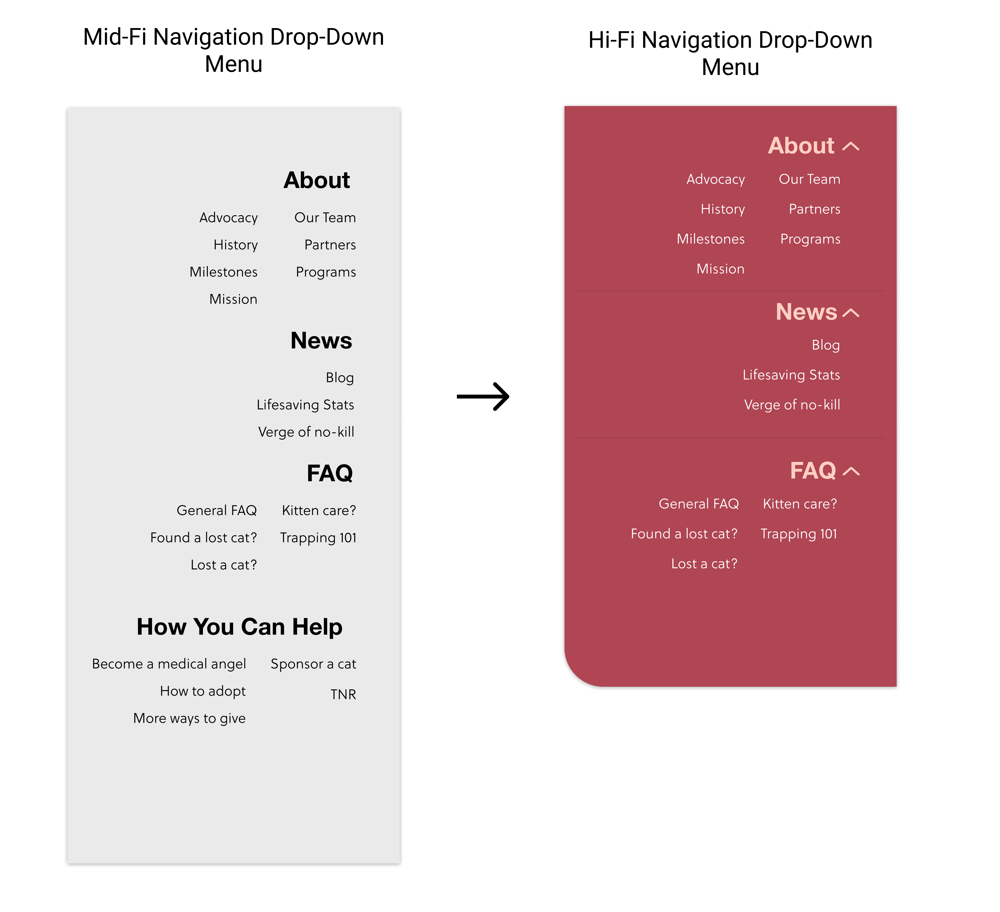

Stray Cat Alliance
A UI Redesign of the non-profit organization, Stray Cat Alliance

A UI Redesign of the non-profit organization, Stray Cat Alliance

This project was created as part of the UC Berkeley UX/UI Bootcamp. The project scope is to redesign a website for a non-profit organization.
To start off, our team did an heuristic analysis on the UI for the existing Stray Cat Alliance webapge. From there, user interviews were conducted to collect qualitative data. Additonally, usability testings were conducted to get feedback on any challenges or problems that a user faces in the existing webpage. We also created a Google survey to understand people's attitudes and past experiences with non-profits. We also wanted to explore people's experiences with pet adoption specifically.
From our research, we found that people were most concerned with the trustworthiness and credibility of nonprofits, and that the current webpage does not look inviting or friendly, which is something our team felt was important for an animal non profit webpage.
 After gathering our insights and creating our empathy map, we synthesized our user persona, Jessica. Jessica is a 30 years old woman, who loves animals. She finally feels that she has extra time on her hands, so she wants to fill it with something meaningful. As a child, her cat was her best friend so she wants to be able to adopt or volunteer to look after less fortunate cats. She is now ready to adopt a cat by herself for the first time, but is skeptical of many non profits.
After gathering our insights and creating our empathy map, we synthesized our user persona, Jessica. Jessica is a 30 years old woman, who loves animals. She finally feels that she has extra time on her hands, so she wants to fill it with something meaningful. As a child, her cat was her best friend so she wants to be able to adopt or volunteer to look after less fortunate cats. She is now ready to adopt a cat by herself for the first time, but is skeptical of many non profits.

Our website was designed to find happy homes for cats in need. We have observed that our website isn't meeting our expectations for adoption rates and donation goals, which is causing a strain on our resources. How might we incorporate better UI designs to improve the trustworthiness and navigability of our website, so that we can attract more volunteers and place more cats in their furever home.
We decided to focus on a main flow, which was to adopt a cat. We felt that this aligned with the organization's goals to advocate for every cat’s right to be safe, healthy and valued. We used card sorting to determine information architechure of the website.


From this, we redesigned the navigation bar so that users could get to their goals with less clicks. We also added a hamburger menu, which is uncommon for websites, but we wanted to still provide people access to the information from the organization.
We used a feature priority matrix to identify features that would have the greatest impact for users, yet the least amount of strain for developers. From this, we determined the optimal features would include:
1) Easy application process with transparent information about the organization 2) Virtual meetings before adoption
We then created a user scenario for our persona, to help better understand our user's needs and pain points.

We made a complete overhaul of the organization’s branding by creating a style tile and style guide - our goal was to make the site look more clean, inviting and welcoming so we chose colors that made the site feel friendlier.
 I was responsible for designing the adoption, and cat overview page. From Lo-Fi to Mid-Fi, we added breadcrumbs for easier navigation, and to improve the findability of the site pages. Additionally, we designed the footer so that it is consistent and easily discoverable.
I was responsible for designing the adoption, and cat overview page. From Lo-Fi to Mid-Fi, we added breadcrumbs for easier navigation, and to improve the findability of the site pages. Additionally, we designed the footer so that it is consistent and easily discoverable.

Before moving to our Hi-Fi prototypes, we made several significant iterations after completing some user tests.
1. We had a lot of feedback regarding the section, “How You Can Help” in the hamburger menu wherein all of the pages under that section could be placed under the other categories if we were to create dropdown menus for the navigation bar. We found out that in doing so, it made information more accessible from the get-go, making the site easier to navigate. 2. We also made the sections within the hamburger menu dropdown menus too, to hide the amount of information thrown at a user all at once to reduce the feeling of being overwhelmed by seeing too much text. 3. Lastly, we changed the logo to a cat that looked more friendly and welcoming with the purpose of it being a reflection of how we want our users to feel when visiting the website. .png)
We understood that a welcoming and clean website is a powerful tool that could help a nonprofit to reach their goals. For our next step we want to focus on building out their Volunteering feature and then continue on to developing the other programs they offer.
More testing, more iterations! It was very useful for us to get input from potential users. That helped us direction our design decisions. In the future, we would like to have more time and resources to test, and it would be ideal to get in contact with Stray Cat Alliance in order to collaborate, so we can meet their vision going forward.